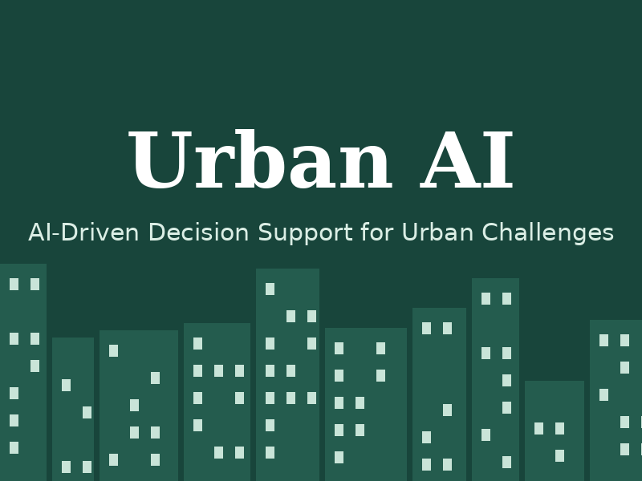

Computational Mathematics, Science & Engineering · Michigan State University
Hou Lab
AI and machine learning for biomolecular structure, omics, and health
About the Lab
The Hou Lab develops data-driven computational methods — machine learning, deep learning, and computational optimization — to address fundamental problems in the biological sciences.
Our core interests include protein and RNA structure prediction, molecular interactions (protein–protein complexes, protein–RNA contacts), and quality assessment of predicted molecular structures. We also participate in collaborative projects in healthcare analytics, privacy-preserving machine learning, and omics data analysis, and we are actively exploring how AI agents and large language models can automate structural biology workflows.
The lab is led by Dr. Jie Hou, a tenure-track Assistant Professor in the Department of Computational Mathematics, Science and Engineering (CMSE) at Michigan State University. Before joining MSU in January 2026, Dr. Hou was an Associate Professor (with tenure) in the Department of Computer Science at Saint Louis University, where the lab was founded in 2019.

Assistant Professor, Department of Computational Mathematics, Science and Engineering
Michigan State University
East Lansing, MI 48824, USA
Research Areas
Protein & RNA Structure Prediction and Quality Assessment
Deep learning and data-assisted (SAXS, cryo-EM) modeling of biomolecular 3D structures, AI-ready RNA motif data, and graph neural networks that estimate the accuracy of predicted proteins and complexes without a reference.
Omics & Health Data Analytics
Machine learning for gene regulation and genomic imbalance, single-cell and proteomics data analysis, and pharmacogenetic warfarin dosing deployed through the electronic health record.
AI Agents, Research Security & Education
LLM agents for automated RNA motif analysis, security risks to scientific integrity in AI-driven biology, privacy-preserving learning, and AI-ready education from urban planning to coding.
Recent News
AUGUST 2026
New NSF EAGER award on research security in AI-driven biology

Dr. Hou received an NSF award, Collaborative Research: EAGER: Unveiling Security Risks to Scientific Integrity in AI-Driven Biological Discovery, to study how unverified external datasets and models can compromise biological AI workflows. Award 2628291.
JUNE 2026
Urban AI funded by the MSU AI Ready Spartans Innovation Grant

With PI Dr. Si Chen (School of Planning, Design and Construction), Dr. Hou (co-PI) will build a 20-hour online learning experience on AI-driven decision support for real-world urban challenges, open to students from all majors. Course page.
JANUARY 2026
Hou Lab moves to Michigan State University
Dr. Hou joined the Department of Computational Mathematics, Science and Engineering (CMSE) at MSU as a tenure-track Assistant Professor. The lab is recruiting students at all levels.
Support